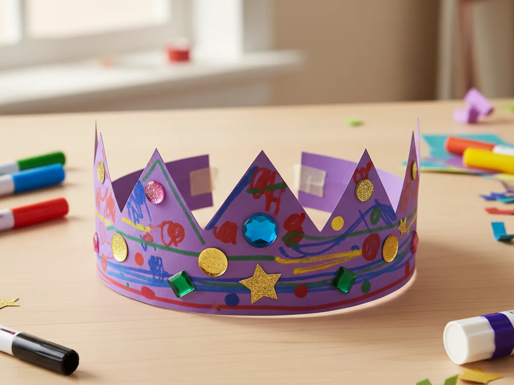
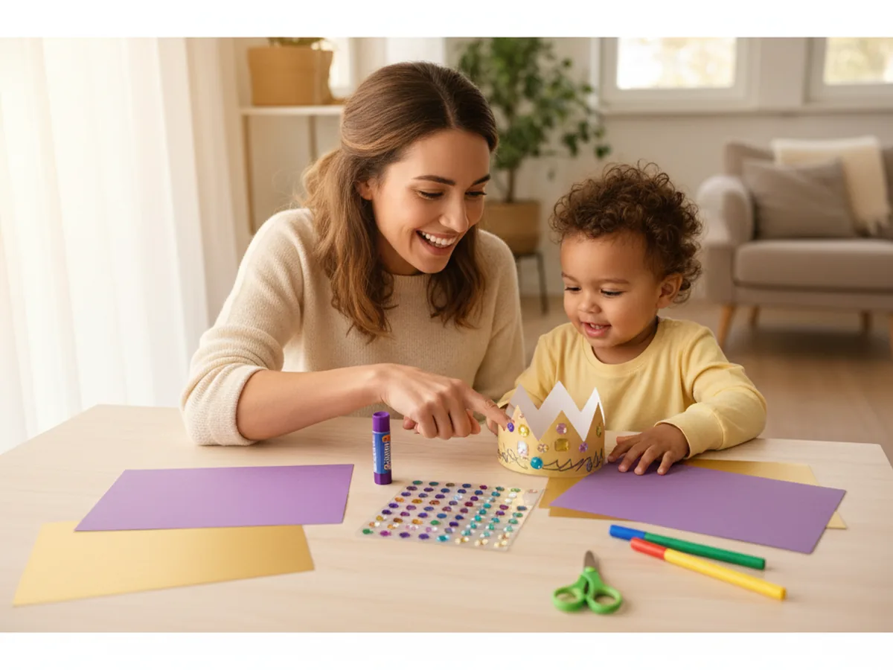
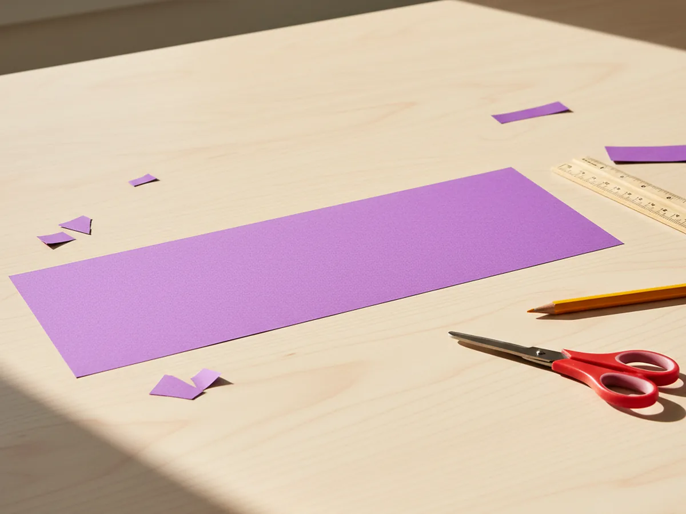
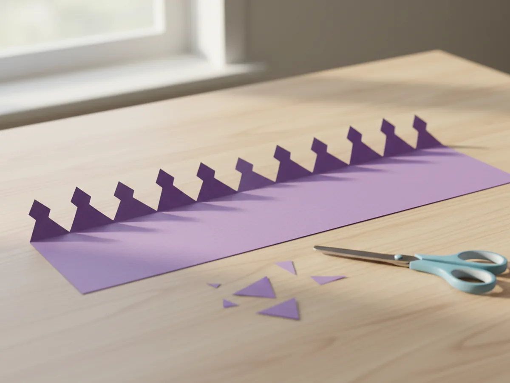
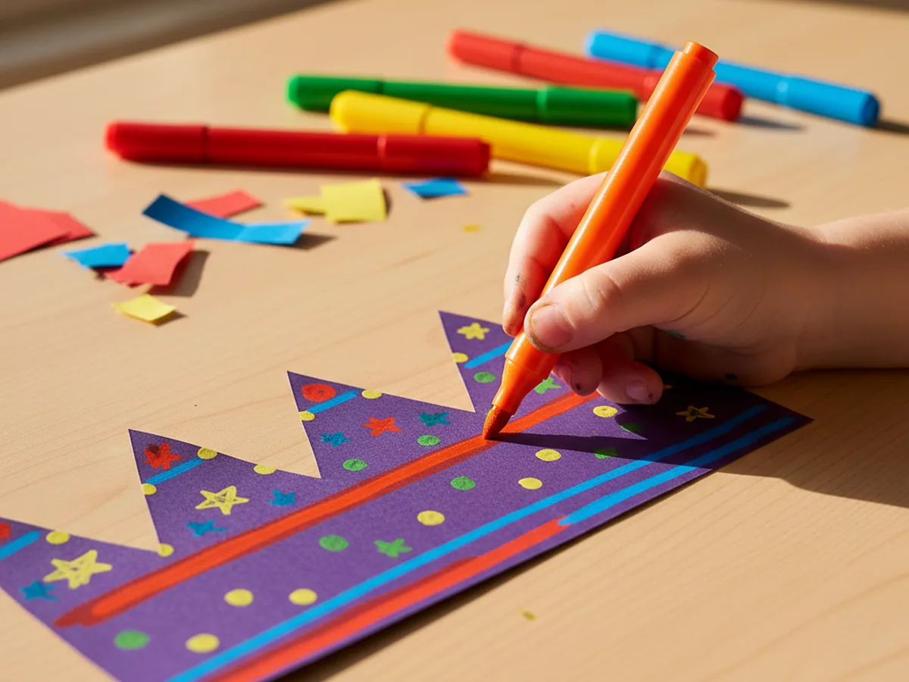
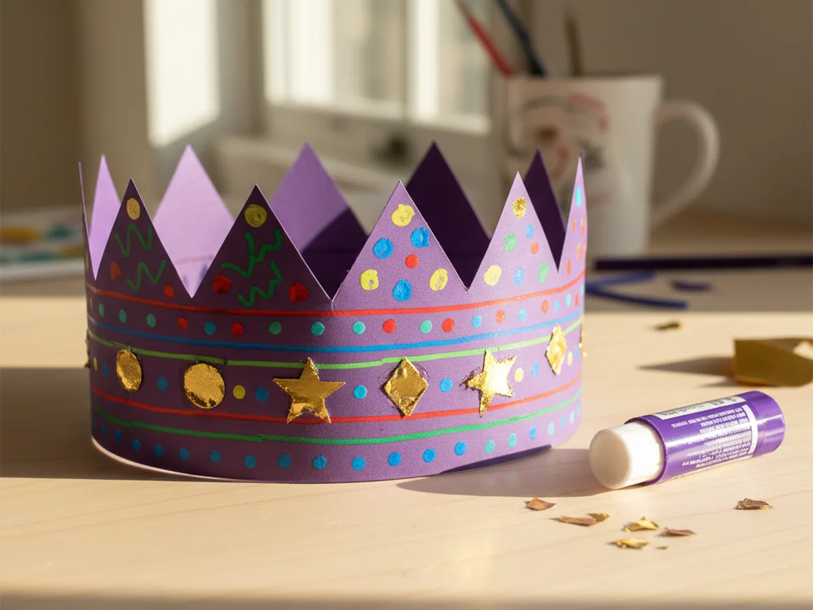
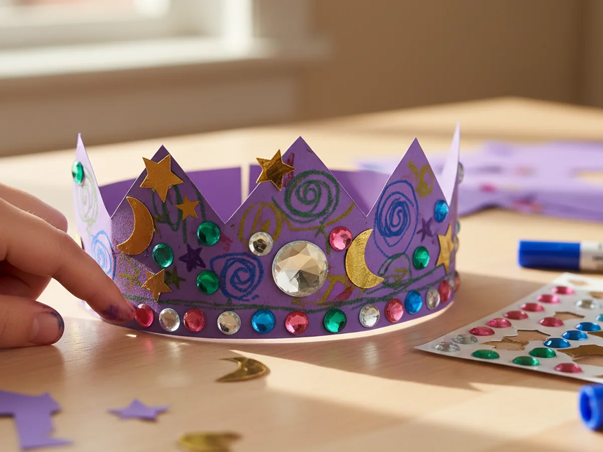
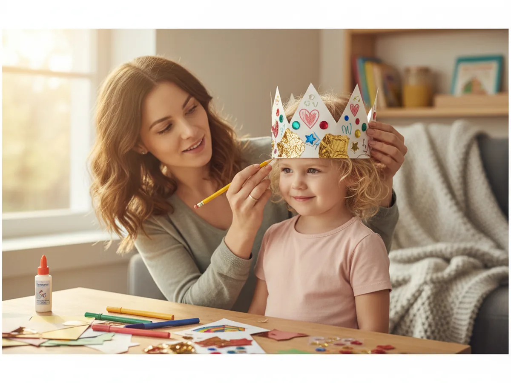
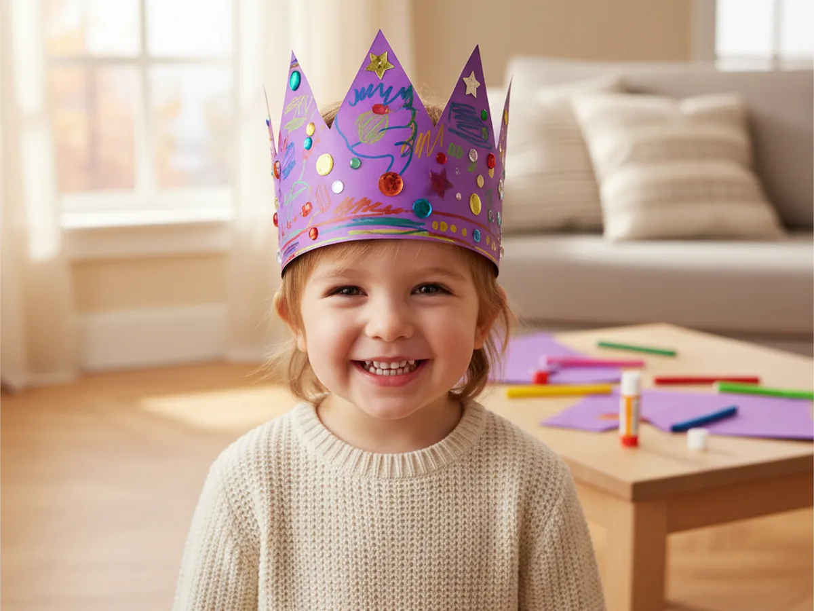

Few crafts turn a regular afternoon into something magical as quickly as a little handmade crown. This paper crown craft comes together in about 25 minutes with supplies you probably already have, and it always ends the same way: with a proud little face peeking out from under a cardstock crown, declaring themselves queen or king of the living room. 👑 It is low-mess, easy to follow for ages 3 and up, and the result feels special enough to keep on display long after craft time is over.
The best part is that every crown ends up uniquely itself. One child will cover it in rainbow stripes and stars. Another will choose all pink and purple gems. A third will go full royal with gold accents and glittery jewels. You get a calm, sweet craft session together, and your child gets a wearable treasure that makes every pretend game feel a little more enchanted.
Why Kids Love This Craft
There is something unforgettable about the moment a child puts a handmade crown on their own head for the first time. They catch sight of themselves in a mirror, stand a little taller, and suddenly the whole afternoon feels like a fairytale. A paper crown craft taps into that pure, imaginative magic that young children have in endless supply. It is not just a craft, it is an invitation into pretend play.
Kids also love that they get to make every decorating choice themselves. Choosing colors, picking which gem goes where, and deciding how many points the crown should have gives them a lovely sense of control and creativity. Unlike crafts that feel overly supervised, this one leaves plenty of room for their own style to shine. ✨
Underneath the fun, this paper crown DIY is quietly practicing fine motor skills, scissor control, and decision making. The steady work of peeling gem stickers and carefully pressing them into place is wonderful for little fingers. And when your child proudly announces they made their crown all by themselves, that feeling of pride will linger long after the craft table is cleaned up.

What You'll Need
Here is everything you need to make a beautiful paper crown craft with your little one.
- Astrobrights Colored Cardstock, one bright sheet makes the base of the crown sturdy
- Metallic Gold Shimmer Cardstock, perfect for shiny accents and tiny royal shapes
- Crayola Construction Paper Bulk Pack, great for extra decorative scraps and color variety
- Fiskars Kids Blunt-Tip Scissors, rounded safety tips are ideal for young crafters
- Elmer's School Glue Sticks, washable and easy for little hands to control
- Crayola Broad Line Markers, bold colors that show up beautifully on cardstock
- Self-Adhesive Gem Stickers, peel and stick sparkle that kids love
- Pencil and ruler, for marking straight fold lines and crown points
Step-by-Step Instructions
Follow these simple steps together and your little royal will have their finished crown ready to wear in under half an hour.
Step 1: Cut a Long Cardstock Strip
Start by cutting a long strip of colored cardstock about 4 inches tall and 24 inches long. Most cardstock sheets are 11 inches across, so you will likely need to cut two strips and tape them together end to end to reach the full length. This long strip is the foundation of your paper crown craft. Pick a bold color like purple, royal blue, red, or pink to get that classic crown feel.

Step 2: Draw and Cut the Crown Points
Along the top long edge of the strip, use your pencil to sketch a gentle zigzag of triangular points. Aim for peaks about 2 inches tall with small valleys in between. When the line looks good, carefully cut along it with your scissors to reveal the classic pointed crown shape. The bottom edge of the strip stays straight, since that is what sits on your child's head.

Step 3: Decorate with Markers
Now the fun begins. Lay the strip flat and let your child decorate the base with bright broad line markers. Stripes, polka dots, swirls, stars, little hearts, or even their name can all work beautifully. There is no wrong way to decorate a paper crown craft. Encourage them to cover the whole surface so every angle of the crown looks cheerful when it wraps around.

Step 4: Add Metallic Gold Accents
Cut small circles, diamond shapes, or tiny stars from your metallic gold cardstock. About eight to ten little shapes are plenty. Use your glue stick to attach them to the front of the crown, spacing them evenly or clustering them around the center point. The shiny gold against the colored base is what gives this paper crown that royal, jewel-encrusted look without any fuss.

Step 5: Stick On the Gem Stickers
Open your gem sticker sheet and let your child pick their favorites. Peel each gem and press it firmly onto the crown, one at a time. A large gem in the center looks like a royal centerpiece, with smaller ones scattered around the points and base. Kids find this step deeply satisfying, and it also builds pincer grip strength in the sweetest, sparkliest way.

Step 6: Size the Crown to Your Child's Head
Gently wrap the decorated strip around your child's head, meeting the ends where it feels snug but not tight. Mark the overlap spot with a pencil on both ends so you know exactly where to glue. If there is extra length sticking out, trim it off carefully. A crown that fits well will stay on during all the royal adventures to come.

Step 7: Glue the Ends to Close the Crown
Apply a generous stripe of glue inside the marked overlap area, then press the two ends together firmly. Hold them for about 20 seconds so the glue can grip, then gently let go. Your paper crown craft is officially finished and ready to wear. Place it on your little one's head and watch the smile take over their whole face. 🎨

Variations to Try
Princess Tiara Version: Instead of a full row of pointed peaks, cut one tall central point with two smaller curves on each side. Use pale pink or lavender cardstock and pearl stickers instead of colorful gems for a softer, more delicate tiara feel.
Leafy Woodland Crown: Swap the zigzag points for a row of leaf shapes cut from green and gold paper. Add small paper flowers or acorn shapes instead of gems to create a nature-inspired crown perfect for outdoor adventures and fall days.
Birthday Party Crown: Write the birthday child's age with a big number on the front, and use their favorite colors throughout. Add some curling ribbon to the back corners for a festive touch. It makes the simplest birthday breakfast feel extra special.
Final Thoughts
A paper crown craft is one of those magical little projects that turns an ordinary afternoon into a royal memory. You get a calm, low-mess craft session together, and your child gets a wearable treasure that powers endless pretend play long after the craft is finished. Do not be surprised if they ask to make a second crown for a sibling, a stuffed animal, or even for you. Some crafts are too much fun to stop at just one. 💛
More Crafts You'll Love
If you enjoyed this royal little project, here are two more sweet paper crafts to try together.
- Paper Basket Craft: Easy DIY Kids Can Make in 30 Minutes
- Paper Flower Craft for Kids: A Simple Step-by-Step Tutorial
Happy crafting!